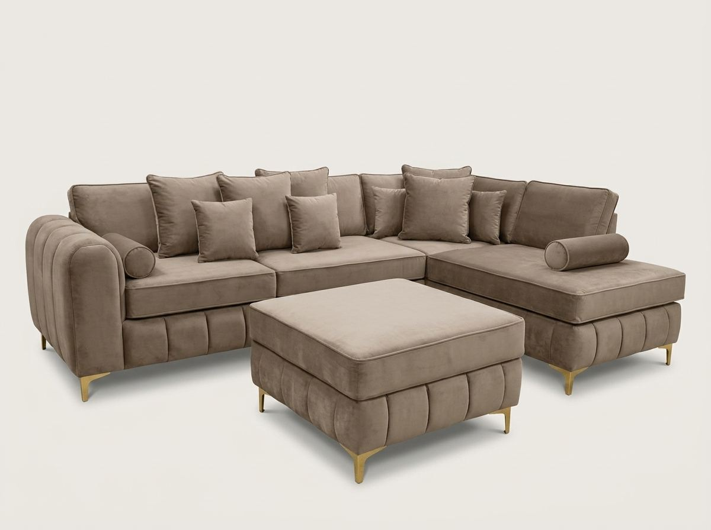

The short version
| Your room (roughly) | What usually works best |
|---|---|
| Under 3m × 3m | A compact 3-seater, or a 2-seater plus an armchair |
| About 3m × 3.5m | An L-shape with a short return, or a 3-seater and 2-seater on two walls |
| 3.5m × 3.5m and up | A small corner sofa built to fit the corner exactly |
The best sofa for a small living room is not the smallest one you can find. It is the one that seats your household while leaving enough floor to walk through. That usually comes down to two things: the right shape for the room, and a length that fits your actual walls rather than a standard catalogue size.
Measure the room, not just the wall
Most people measure the wall the sofa will sit against and stop there. In a small room, the space left over matters more than the sofa itself. These rough rules are a good starting point:
- Walkways: leave around 75cm of clear space wherever people need to walk past.
- Coffee table: about 40–45cm between the seat edge and the table is comfortable to reach without knocking your knees.
- Wall length: a sofa that takes up around two-thirds of the wall tends to look right. Wall to wall makes a small room feel boxed in.
- The awkward bits: note the radiator, the door swing, window sills, sockets and the television. In small rooms these decide the size more often than the wall does.
The best sofa shapes for small rooms
L-shape sofas
For most small UK living rooms, an L-shape is the best all-rounder. You get the comfort of a corner suite, but the short return keeps one side of the room open. It works especially well when the sofa faces the television and the return sits against a side wall. Ask for the return to be kept short: a long chaise eats floor space quickly.
Small corner sofas
A corner sofa makes sense in a small room when there is a genuine corner to fill. It turns dead space into seating, which a straight sofa cannot do. The catch is that standard corner suites are often built for bigger rooms. Having one made to your measurements, with each arm cut to the length your walls allow, is often what makes a corner sofa work in a smaller lounge.
A 3-seater and a 2-seater
Two separate sofas on two walls give similar seating to a corner sofa, but with a gap between them that keeps the room easy to walk through. They are also the easiest option to fit through narrow hallways and to move into your next home. Browse our 2+3 seater sets.
What to avoid in a small room
U-shape sofas and very deep chaise ends rarely suit small rooms. They enclose the space and leave nowhere to walk. Very deep seats can also look heavy in a compact room. If you love that lounging feel, an L-shape with a short chaise is usually a better compromise.
Why a standard size often doesn’t fit
Ready-made sofas come in fixed lengths. In a small room the difference between fitting and not fitting is often only 10 to 20 centimetres. Picture a wall that has 205cm between the door frame and the radiator: a 220cm sofa from a showroom simply won’t go there. A made-to-order sofa can be built at the length your room actually has.
All of our sofas are made to order, so you can ask for a shorter length, a shorter return on an L-shape or corner, or the corner on the other side. Standard resizing costs nothing extra. Our measuring guide shows exactly which numbers to send us.
Details that make a sofa feel smaller
- Raised legs: seeing the floor under the sofa makes the room feel bigger than a sofa that sits flat on the carpet.
- Slimmer arms: big scroll or rolled arms can add noticeable width to each end. In a tight space, slimmer arms give you more seat for the same length.
- Lighter colours: pale fabrics reflect light and look less bulky. In our range, shades such as Plush Ivory, Stone and Ice Grey, Chenille Cream or Bouclé Oatmeal suit small rooms well. See every shade on our fabrics & colours page.
- Fewer scatter cushions: a pile of cushions takes up seat depth. Two or three is plenty on a small sofa.
Can a corner sofa go in the middle of the room?
Yes, if the room is big enough to walk all the way round it. Floating a corner sofa away from the walls is a good way to divide an open-plan space into a seating area. In a small room, though, it nearly always works better against the walls. If you do float one, leave about 75cm behind it so people can pass, and choose a fabric that looks good from the back as well as the front.
Check the way in before you order
Small homes often have small hallways. Before ordering, measure the narrowest point on the route in: the front door, the turn at the bottom of the stairs, the landing and the living room door. Corner suites are made in sections so they can pass through normal doorways, but tell us about any tight turns before your sofa is made, not on delivery day.
Our sofas that suit smaller rooms
- L-Shape Sofa – £649
- Lilly L-Shape Sofa – £749
- Ashton L-Shape Sofa – £749
- Verona Corner Sofa – £599, with each arm made to your measurements
- Olympia 2+3 Seater Sofa – £650 for the pair
Every one comes with free UK delivery, and you can pay cash on delivery. Not sure which would fit? Send us your room measurements on WhatsApp and we’ll tell you honestly what works.
Common questions
What size sofa is best for a small living room?
For most small UK living rooms, a sofa that takes up about two-thirds of the wall works well, while still leaving around 75cm of walkway. In practice that often means a compact 3-seater or a short L-shape. Measure your room first, then choose the size, rather than the other way round.
Is a corner sofa a good idea in a small room?
It can be, if there is a real corner to fill and the sofa is sized to the room. A corner sofa turns an empty corner into seating. Standard corner suites are often too big for small rooms, so one made to your measurements is usually the safer choice.
Is an L-shape or a 3+2 better for a small living room?
An L-shape gives more seats in less floor space, so it suits rooms where seating matters most. A 3-seater and 2-seater on two walls leave a gap to walk through and are easier to get through narrow hallways. Both work well; the layout of your doors and radiator usually decides it.
What colour sofa makes a small room look bigger?
Lighter shades such as ivory, stone, light grey or oatmeal reflect light and look less bulky. Raised legs that show the floor underneath help too.
Can a sofa be made smaller to fit my room?
Yes. A made-to-order sofa can be built shorter, or with a shorter return on an L-shape or corner sofa. At Barki Sofa Hub every sofa is made to order and standard resizing costs nothing extra. Send us your measurements on WhatsApp.